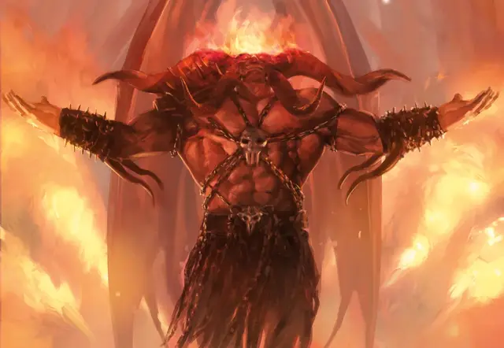

Ракдос
Rakdos
Огромное Исчадие (Демон), хаотично-злое, именной НИП

Класс Доспеха 20 (природный доспех)
Хиты 300 (24к12 + 144)
Скорость 40 футов, летая 80 футов
| мод | спас | ||
|---|---|---|---|
| СИЛ | 26 | +8 | +15 |
| ЛОВ | 15 | +2 | +2 |
| ТЕЛ | 22 | +6 | +13 |
| мод | спас | ||
|---|---|---|---|
| ИНТ | 14 | +2 | +2 |
| МДР | 18 | +4 | +11 |
| ХАР | 30 | +10 | +17 |
Навыки Выступление +17, Запугивание +17, Убеждение +17
Сопротивление урону некротическая энергия; дробящий, колющий, рубящий от немагических атак
Иммунитет к урону огонь, яд
Иммунитет к состояниям испуг, истощение, отравление, очарование
Чувства истинное зрение 120 футов, пассивное Восприятие 14
Языки Общий, Бездны
Опасность 24 (62000 опыта)
Бонус мастерства +7
Особенности
Захватывающее присутствие. Любое существо, которое начинает свой ход в пределах 30 футов от Ракдоса, должно совершить спасбросок Мудрости Сл 25. При провале существо становится очарованным Ракдосом на 1 минуту или до тех пор, пока существо не окажется дальше 30 футов от него. При успешном спасброске существо становится невосприимчивым к Захватывающему присутствию Ракдоса на 24 часа.
Жестокие развлечения. Когда хиты существа, которое Ракдос может видеть в пределах 60 футов от себя, опускаются до 0, Ракдос получает 25 временных хитов.
Врожденное колдовство. Базовой характеристикой заклинаний Ракдоса является Харизма (Сл спасброска от заклинания 25). Он может накладывать заклинание не требуя никаких материальных компонентов.
• Неограничено: адское возмездие [hellish rebuke] (вариант 5-го уровня)
Легендарное сопротивление (3/день). Если Ракдос проваливает спасбросок, вместо этого он может выбрать успех.
Магическое оружие. Атаки оружием Ракдоса считаются магическими.
ЧЕРТЫ Ракдоса.
Идеал:. «Каждый должен добиваться своего самого большого желания».
Привязанность. : «Если хочешь получить мою благосклонность, покажи мне представление, которого я никогда раньше не видел».
Слабость:. «Что такое радость?».
Действия
Мультиатака. Ракдос совершает две атаки своей Косой призыва занавеса или Когтями.
Коса призыва занавеса. Рукопашная атака оружием: +15 к попаданию, досягаемость 10 фт., одна цель. Попадание: 24 (3к10 + 8) рубящего урона плюс 13 (3к8) урона огнём.
Коготь. . Рукопашная атака оружием: +15 к попаданию, досягаемость 10 фт., одна цель. Попадание: 17 (2к8 + 8) рубящего урона.
Легендарные действия
Ракдос может совершить 3 легендарных действия, выбирая из представленных ниже вариантов. За один раз можно использовать только одно легендарное действие, и только в конце хода другого существа. Ракдос восстанавливает использованные легендарные действия в начале своего хода.
Садистское веселье. Каждое существо в пределах 60 футов от Ракдоса, являющееся его союзником или очарованное им, должно реакцией переместиться на половину своей скорости к ближайшему к нему существу, которое оно может видеть, при условии, что оно уже не находится в пределах 5 футов от этого существа. Затем оно должно совершить одну рукопашную атаку против этого существа, если оно в состоянии это сделать.
Коса (стоит 2 действия). Ракдос использует Косу призыва занавеса.
Прикосновение боли (стоит 3 действия). Ракдос совершает атаку Когтями по одному существу в пределах 10 футов от него. Цель должна преуспеть в спасброске Телосложения Сл 25, иначе будет отравлена на 1 минуту. Отравленное существо не может удерживать концентрацию на заклинании или любом другом эффекте, требующем концентрации. Отравленное существо может повторять спасбросок в конце каждого своего хода, оканчивая эффект на себе в случае успеха.
Описание
Ракдос, демон, в честь которого назван целый культ, олицетворяет гедонизм. Он также является непревзойденным артистом, чье простое появление является актом ужасного выступления. Чудовищная фигура тридцати футов ростом, расправившая огромные крылья, увенчанная огнем и размахивающая пылающей косой, Ракдос требует внимания к себе. Каждое его появление - это шоустопер.
Иногда после своего торжественного появления Ракдос приседает, чтобы стать свидетелем выступления тех, кто его обожает. Для них важно только его мнение, но он требовательный зритель. Он видел тысячи лет цирковых трюков и не терпит артистов, которые не выкладываются на полную. Его пылающая коса привела к внезапному и впечатляющему завершению не одного скучного шоу. Измученный, Ракдос редко посещает выступления своего культа. Он часто уходит в свое логово под гильдией культа на месяцы или годы, но его последователи знают, что он может появиться в любое время, чтобы стать свидетелем твоего последнего выступления.